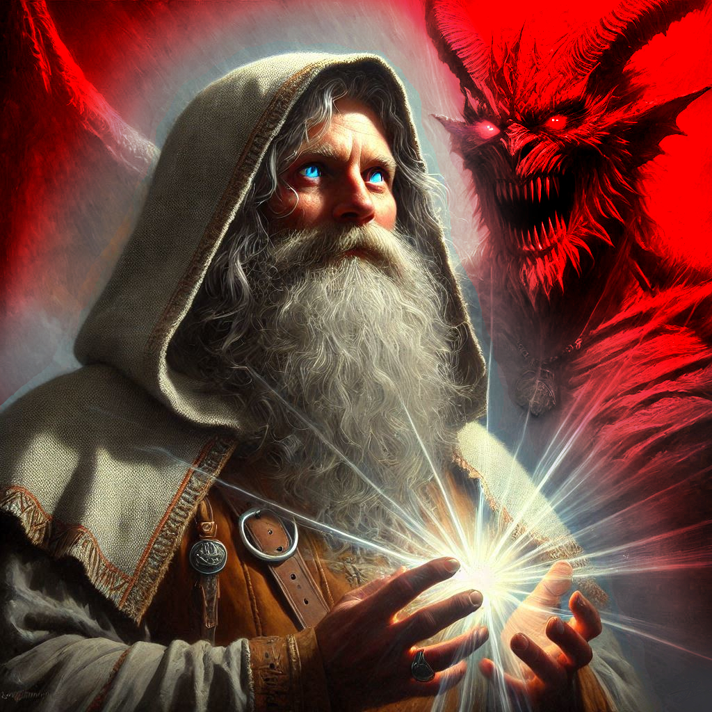
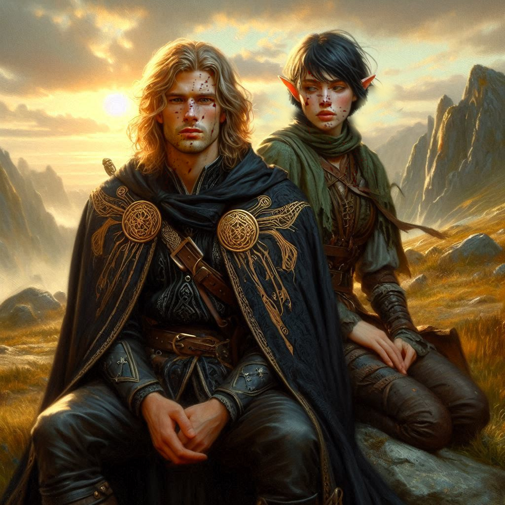
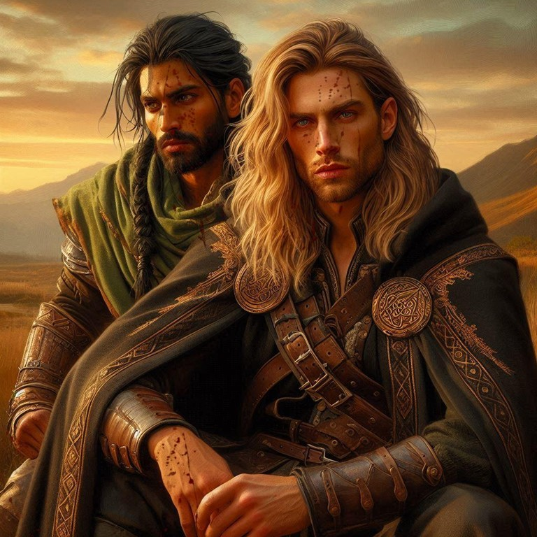

Onyx and Jorsh
You draw a deep breath, steeling yourself, then rush forward into the fray. Dark elves close in around you, their ominous black and purple armor glinting under the eerie glow of the temple’s ancient runes. Your only thought is Onyx—still fighting his own losing battle across the chamber—and the promise you made to yourself to save him. You refuse to let your friends fall.
Beside you, Elias is a flurry of motion, slashing through waves of dark elves with a desperate determination that matches your own. His face is set, focused, though he spares a glance to check if you're still by his side. Baider has already charged ahead, roaring, drawing a path through the horde with sheer will and brute force, his eyes fierce as they lock onto his old friend trapped against the altar.
Finally, you break through, reaching Onyx. His voice is barely a whisper, his energy waning, but he meets your gaze with a glint of warmth. “I knew you’d make it,” he says, his voice lined with an odd mixture of pride and regret.
Before you can answer, Varis strides forward, his figure draped in a mantle of shadows. The dark elf prince’s eyes gleam with the confidence of someone who believes victory is assured. He raises his hands, summoning tendrils of dark magic that twist through the air, coiling toward you, Elias, and Baider. Shadows creep closer, tightening around you, each moment bringing a tightening dread. You raise your sword, defiant, but you know this isn’t a battle you can win alone.
The dark elves crowd in, their ranks solidifying as if guided by Varis’ mind. Varis sneers. “Do you think you can save him?” he taunts. “All of you are bound to be sacrificed to Yaldaboath. It’s only a matter of time.”
Just as you feel the shadows begin to suffocate, a sudden pulse of energy shudders through the chamber. The air turns cold, and the shadows around you recoil. You turn to see Jorsh—his figure emerging from the edge of the darkness, his face as hard as you remember, yet different. He wields a staff forged from dark magic, a weapon humming with restrained power. His eyes meet yours briefly, holding that bittersweet history that binds you, and then he advances, raising his staff to conjure his own dark spells against Varis.
“You won’t have the power you seek, Varis,” Jorsh declares, his voice cutting through the silence that has fallen. His magic collides with Varis’, and the two forces clash, swirling in a tempest of light and darkness.
You grip Onyx’s arm and pull him away from the altar, leading him to safety. But his hand grips your shoulder with surprising strength. “There’s no escaping this for me, Kira,” he says, his voice carrying a sorrowful resolve. “My purpose here was always meant to end.”
“No,” you say, voice shaking. “We’re taking you out of here.”
Onyx shakes his head, his eyes distant, as if seeing something far beyond you. “There’s only one way to end this. Let Jorsh open the portal to Yaldaboath’s realm. Only there can I stop him.”
Before you can respond, Jorsh, his face tense with concentration, speaks the words to open the portal. You watch in horror as the air splits, revealing a seething void of crimson and shadow—Yaldaboath’s domain, the gateway to the Nine Hells.
Onyx steps forward, his old, weathered face softening as he looks at you one last time. “Keep fighting, Kira,” he says quietly. “Remember the strength within you, and protect those who can’t protect themselves.”
Before you can move, he launches himself into the portal, his form glowing with a holy light that outshines the darkness. The demon god Yaldaboath emerges with a roar, but Onyx, radiant in his final stand, challenges the monstrous entity with everything he has. Their energies clash in a blinding explosion, light versus darkness, both forces tearing at each other.
The explosion sends waves of energy through the temple, shaking the ground and cracking the walls. Varis screams, his control faltering as the magic he wielded is undone by Onyx’s sacrifice. Shadows consume him, and his mercenaries scatter, their strength broken by the loss of their dark leader.
“Run!” Jorsh’s voice echoes through the din. He grabs your arm, pulling you toward the collapsing exit. Elias joins you, fighting off the few remaining dark elves as you all push your way out of the chamber and toward safety.
Behind you, you hear the roar of Yaldaboath, silenced as the portal seals with a final flash of light. The temple collapses inward, sealing the Realm of Shadows, and burying its dark magic beneath tons of stone. You and your allies scramble into the open, just as the ground shudders with the final collapse of the temple behind you.
Outside, in the Realm of Shadows, dawn is breaking, a soft glow rising over the horizon. The air is lighter, carrying the promise of a new beginning, a dawn free from Yaldaboath's terror and Varis’ schemes. You glance at Jorsh, who looks worn, yet resolute. His eyes meet yours, softer now, though lined with the history of all that’s passed between you.
“I don’t understand,” you say, looking at Jorsh with a mixture of anger and gratitude. “What just happened? Onyx. He’s gone?”
“Yes,” Jorsh says, sadness evident in his eyes.
“And you knew all along?” Elias asks, an edge of contempt in his voice.
“About a year ago, Onyx summoned me,” Jorsh begins. “I assumed he was going to try to stop me from pursuing my mastery of the dark magic required to battle Yaldaboath…”
“But?”
“He told me who he really was,” Jorsh says, looking at you seriously. “Our old village druid was not just some crazy old dwarf with a grudge. He was actually an incarnation of Adonais, the Guardian of Light.”
“Impossible,” you say.
“I thought so too,” Jorsh nods, “but then he taught me things that mortals have not known for centuries. He told me how he was destined to face Yaldaboath and that Varis was merely a pawn of prophecy. Onyx told me that he had been waiting for the right time to face Yaldaboath, and that he believed my obsession with stopping Varis was the sign he was seeking.”
“So he used you to open the portal and fight Varis?” you ask.
“Yes,” Jorsh says.
“Why would the magistrate send Kira on a dangerous mission to arrest you?” Elias frowns skeptically.
“Varis had infiltrated nearly every house of nobility in the Kingdom of Yew,” Jorsh explains patiently. “Even the throne was under his thumb. Princess Hawthorn wanted me out of the picture. She believed the portal opened to a vast treasure that would save her kingdom.”
“But it only opened to this wretched place,” Elias says, looking around at the bleak landscape. “The Realm of Shadows.”
“You’re smarter than you look,” Jorsh says almost playfully. “But look. The sun is rising here now.” Jorsh points toward the eastern horizon where the first rays of the sun are shining into the storm clouds overhead.
“A new dawn,” you say. You look at Elias and Jorsh, both of whom are looking at each other with palpable tension.
“How do we get out of here?” Elias asks.
Jorsh looks at you sadly. “There are other, smaller portals that will take you back to telepoints not far from Belladonna, but we will have to wait until the constellations and the phases of the moon align.”
“How long will that take?” Elias asks.
“Let’s just say we have a few weeks together here in the Shadow Realm,” Jorsh says with a smile.
Jorsh looks like the boy you once loved. You shake your head, wondering how you are going to survive the next month trapped here with the two men who adore you.
The battle of Umbra’Thal is over for now, but the war in your heart is just beginning...